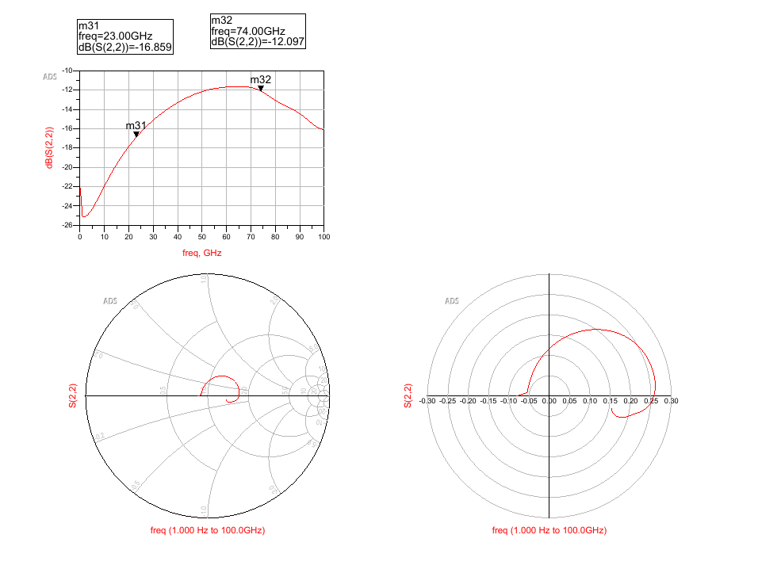

Smith Chart
这是50欧电阻接一段传输线之后的S22,可以判断传输线特征阻抗是大于50欧还是小于50欧吗

可以，通过分析史密斯圆图（Smith Chart）可以判断传输线的特征阻抗。
结论是：传输线的特征阻抗大于50欧姆。
以下是详细的分析步骤：
-
分析起点 (DC频率)：
- 这个电路的结构是在测试端口后连接一段传输线，传输线的末端接一个50欧姆的电阻作为负载。
- 在直流 (DC) 或非常低的频率下，传输线的电长度趋近于零，可以将其视为一根导线。因此，测试端口看到的阻抗就是负载阻抗，即50欧姆。
- S22是反射系数。当负载阻抗（50欧姆）与系统参考阻抗（通常也是50欧姆）完全匹配时，反射系数为0。
- 在史密斯圆图上，反射系数为0的点就是图的中心点。从图中左下角的史密斯圆图可以看出，红色曲线的起点（频率最低处）正是在圆心位置，这与理论分析相符。
-
分析频率增加时的轨迹变化：
- 当频率从零开始增加时，传输线的电长度变大，其阻抗变换的效应开始显现。
- 观察史密斯圆图上的红色轨迹，它从中心点开始，随着频率的增加，向上半圆区域移动。
- 史密斯圆图的上半圆代表感性阻抗（即阻抗的虚部为正，+jX），下半圆代表容性阻抗（即阻抗的虚部为负，-jX）。
-
得出结论：
- 一个基本的传输线理论是：当传输线的特征阻抗（Z₀）大于其负载阻抗（Zₗ）时，对于一小段传输线，其输入阻抗会呈现出感性。
- 反之，如果传输线的特征阻抗（Z₀）小于其负载阻抗（Zₗ），其输入阻抗会呈现出容性。
- 在这个案例中，负载阻抗 Zₗ = 50欧姆。由于S22的轨迹进入了代表感性阻抗的史密斯图上半圆，这表明输入阻抗是感性的。因此，我们可以断定传输线的特征阻抗 Z₀ > Zₗ，即 Z₀ > 50欧姆。
可以。
关键并不是看 dB(S22) 的幅度，而是看 S22 在 Smith 图上的“起步方向”。
步骤与原理如下：
-
把测量系统归一化到 50 Ω。
终端电阻是 50 Ω，因此在传输线—电阻接口处的反射系数为
Γ₀＝(50 – Z₀)/(50 + Z₀)
• 若 Z₀＜50 Ω → Γ₀>0（与入射波同相）
• 若 Z₀＞50 Ω → Γ₀<0（与入射波反相） -
在频率很低时，线路电气长度 βl≈0，测得的 Γ≈0。
频率稍稍升高(βl 有了微小增量)后，
Γ_in = Γ₀·e^(–j2βl)
• 若 Γ₀>0，e^(–j2βl) 带来一点负相位 → 曲线先掉到 Smith 图下半平面（负虚部，电容性）；
• 若 Γ₀<0，曲线则先跑到上半平面（正虚部，电感性）。
-
观察图中红色轨迹
• 从中心开始后首先进入实轴上侧，说明它一开始呈电感性 → Γ₀ 为负 → Z₀>50 Ω。 -
用 |Γ| 估个量级
幅度最大约 –12 dB → |Γ|≈0.25。
Z₀ = 50 Ω·(1 – |Γ|)/(1 + |Γ|) ≈ 50×0.75/1.25 ≈ 30 Ω。
（这里只是粗算，实际还要考虑走线损耗、连接过渡等。）
结论
这段传输线的特征阻抗明显小于 50 Ω，大约在 30 ~ 40 Ω 左右。